To solve for the other currents (and voltages), simply find the other ΔI’s and divide by Δ.
The last approach, as you can see, requires a huge mathematical effort to get a single current value. For simplicity, you can find out everything that’s going on in the circuit by running it through a circuit simulator program. For example, using MultiSim, we get the results in Fig. 2.68:
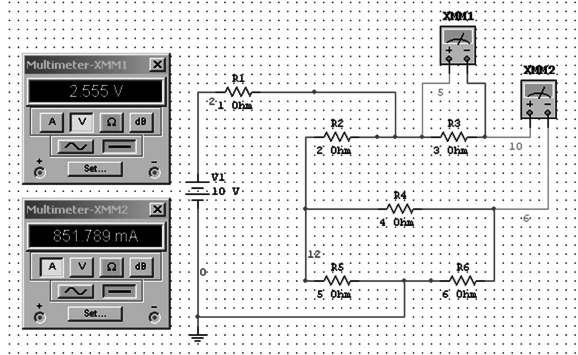
Doing long calculations is good theoretical exercise, but in practice it’s a waste of time. A problem such as this only takes a few minutes to solve using a simulator. The results from simulation:
V1 = 2.027 V I1 = 2.027 A
V2 = 2.351 V I2 = 1.175 A
V3 = 2.555 V I3 = 0.852 A
V4 = 0.204 V I4 = 0.051 A
V5 = 5.622 V I5 = 1.124 A
V6 = 5.417 V I6 = 0.903 A
FIGURE 2.68
Plugging the results back into the diagram, you can see Kirchhoff’s voltage and current laws in action, as shown in Fig. 2.69. Take any loop, sum the changes in voltage across components, and you get 0 (note that the voltages indicated in black shadow represent point voltages relative to 0-V reference ground). Also, the current that enters any junction will equal the sum of the currents exiting the junction, and vice versa—Kirchhoff’s current law.
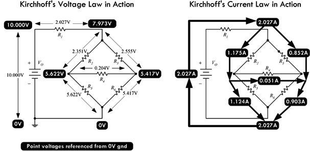
FIGURE 2.69
Now, before you get too gung ho about playing with equations or become lazy by grabbing a simulator, you should check out a special theorem known as Thevenin’s theorem. This theorem uses some very interesting tricks to analyze circuits, and it may help you avoid dealing with systems of equations or having to resort to simulation. Thevenin’s theorem utilizes something called the superposition theorem, which we must consider first.
2.18 Superposition Theorem
The superposition theorem is an important concept in electronics that is useful whenever a linear circuit contains more than one source. It can be stated as follows:
Superposition theorem:
The current in a branch of a linear circuit is equal to the sum of the currents produced by each source, with the other sources set equal to zero.
The proof of the superposition theorem follows directly from the fact that Kirchhoff’s laws applied to linear circuits always result in a set of linear equations, which can be reduced to a single linear equation in a single unknown. This means that an unknown branch current can thus be written as a linear superposition of each of the source terms with an appropriate coefficient. Be aware that the superposition should not be applied to nonlinear circuits.
It is important to make clear what it means to set sources equal to zero when interrupting the superposition theorem. A source may be a voltage source or a current source. If the source is a voltage source, to set it to zero means that the points in the circuit where its terminals were connected must be kept at the same potential. The only way to do this is to replace the voltage source with a conductor, thus creating a short circuit. If the source is a current source, to set it to zero means to simply remove it and leave the terminals open, thus creating an open circuit. A short circuit causes the voltage to be zero; an open circuit causes the current to be zero.
In Fig. 2.70, we will analyze the circuit using the superposition theorem. The circuit contains two resistors, a voltage source, and a current source.
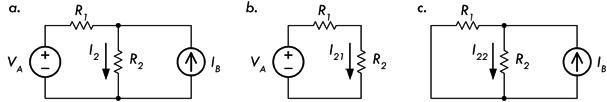
FIGURE 2.70 The circuit in (a) can be analyzed using the superposition theorem by considering the simpler circuits in (b) and (c).
First we remove the current source (create an open circuit at its terminals), as shown in Fig. 2.70b. The new current through R2 due to the voltage source alone is just VA divided by the equivalent resistance:
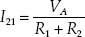
This current is called the partial current in branch 2 due to source 1. Next, the voltage source is removed and set to zero by replacing it with a conductor (we short it); see Fig. 2.70c. The resulting circuit is a current divider, and the resulting partial current is given by:
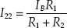
Applying the superposition, we add the partial current to get the total current:
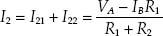
The current through R1 could have been determined in a similar manner, with the following result:
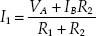
The superposition theorem is an important tool whose theory makes possible complex impedance analysis in linear, sinusoidally driven circuits—a subject we will cover a bit later. The superposition is also an underlying mechanism that makes possible two important circuit theorems: Thevenin’s theorem and Norton’s theorem. These two theorems, which use some fairly ingenious tricks, are much more practical to use than the superposition. Though you will seldom use the superposition directly, it is important to know that it is the base upon which many other circuit analysis tools rest.
2.19 Thevenin’s and Norton’s Theorems
2.19.1 Thevenin’s Theorem
Say that you are given a complex circuit such as that shown in Fig. 2.71. Pretend that you are only interested in figuring out what the voltage will be across terminals A and F (or any other set of terminals, for that matter) and what amount of current will flow through a load resistor attached between these terminals. If you were to apply Kirchhoff’s laws to this problem, you would be in trouble—the amount of work required to set up the equations would be a nightmare, and then after that you would be left with a nasty system of equations to solve.
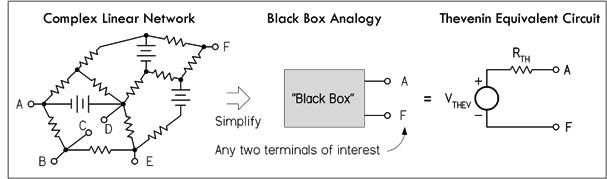
FIGURE 2.71 The essence of Thevenin’s theorem.
Luckily, a man by the name of Thevenin came up with a theorem, or trick, to simplify the problem and produce an answer—one that does not involve “hairy” mathematics. Using what Thevenin discovered, if only two terminals are of interest, these two terminals can be extracted from the complex circuit, and the rest of the circuit can be considered a black box. Now the only things left to work with are these two terminals. By applying Thevenin’s tricks (which you will see in a moment), you will discover that this black box, or any linear two-terminal dc network, can be represented by a voltage source in series with a resistor. (This statement is referred to as Thevenin’s theorem.) The voltage source is called the Thevenin voltage VTHEV, and the resistance is called the Thevenin resistance RTHEV; together, the two form what is called the Thevenin equivalent circuit. From this simple equivalent circuit you can easily calculate the current flow through a load placed across its terminals by using Ohm’s law: I = VTHEV/(RTHEV + RLOAD).
Note that circuit terminals (black box terminals) might actually not be present in a circuit. For example, instead, you may want to find the current and voltage across a resistor (RLOAD) that is already within a complex network. In this case, you must remove the resistor and create two terminals (making a black box) and then find the Thevenin equivalent circuit. After the Thevenin equivalent circuit is found, you simply replace the resistor (or place it across the terminals of the Thevenin equivalent circuit), calculate the voltage across it, and calculate the current through it by applying Ohm’s law again: I = VTHEV/(RTHEV + RLOAD). However, two important questions remain: What are the tricks? And what are VTHEV and RTHEV?
First, VTHEV is simply the voltage across the terminals of the black box, which can be either measured or calculated. RTHEV is the resistance across the terminals of the black box when all the dc sources (e.g., batteries) are replaced with shorts, and it, too, can be measured or calculated.
As for the tricks, we can generalize and say that the superposition theorem is involved. However, Thevenin figured out, using the tricks presented in the following example, that the labor involved with applying the superposition theorem (removing sources one at a time, calculating partial currents, and adding them, etc.) could be reduced by removing all sources at once, and finding the Thevenin resistance. An example is the best cure. See Fig. 2.72.
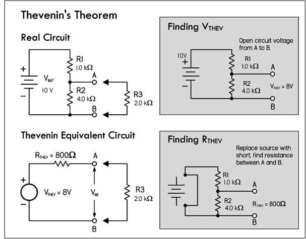
FIGURE 2.72 Here’s an example of how Thevenin’s theorem can be used in a voltage divider circuit to easily calculate the voltage across and the current flow through an attached load.
First remove the load R3 and open up the terminals of interest (A and B). Then, determine the Thevenin voltage VTHEV using Ohm’s law or the voltage divider equation—it’s the open-circuit voltage across A and B.
Next, calculate the Thevenin resistance RTHEV across the terminals A and B by replacing the dc source (VBAT) with a short and calculating or measuring the resistance across A and B. RTHEV is simply R1 and R2 in parallel.
The final Thevenin equivalent circuit is then simply VTHEV in series with RTHEV. The voltage across the load and the current through the load (R3) are:
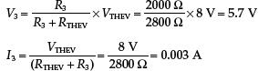
2.19.2 Norton’s Theorem
Norton’s theorem is another tool for analyzing complex networks. Like Thevenin’s theorem, it takes a complex two-terminal network and replaces it with a simple equivalent circuit. However, instead of a Thevenin voltage source in series with a Thevenin resistance, the Norton equivalent circuit consists of a current source in parallel with a resistance—which happens to be the same as the Thevenin resistance. The only new trick is finding the value of the current source, which is referred to as the Norton current INORTON. In essence, Norton’s theorem is to current sources as Thevenin’s theorem is to voltage sources. Its underlying mechanism, like that of Thevenin’s, is the superposition theorem.
Figure 2.73 shows how the circuit just analyzed by means of Thevenin’s theorem can be analyzed using Norton’s theorem. The Norton current INORTON represents the short-circuit current through terminals A and B.
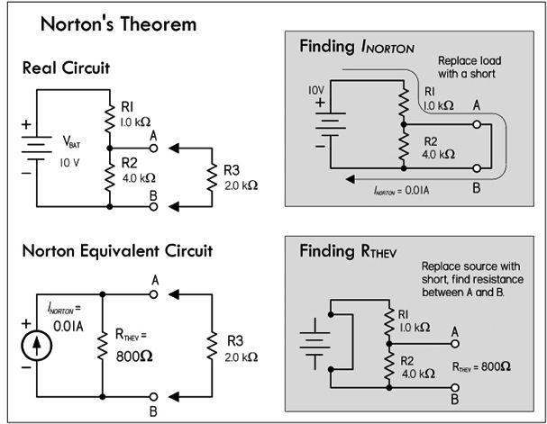
FIGURE 2.73 To find INORTON, first remove load R3 and replace it with a short. Using Ohm’s law, and noticing that no current will ideally flow through R2 since it’s shorted, you find the short-circuit current, or Norton current, to be:
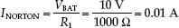
Next, find the Thevenin resistance—simply use the result from the previous example:
RTHEV = 800 Ω.
The final Norton equivalent circuit can then be constructed. Replacing R3, you can now determine how much current will flow through R3, using Ohm’s law, or simply applying the current divider equation.
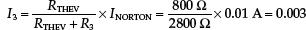
A Norton equivalent circuit can be transformed into a Thevenin equivalent circuit and vice versa. The equivalent resistor stays the same in both cases; it is placed in series with the voltage source in the case of a Thevenin equivalent circuit and in parallel with the current source in the case of the Norton equivalent circuit. The voltage for a Thevenin equivalent source is equal to the nonload voltage appearing across the resistor in the Norton equivalent circuit. The current for a Norton equivalent source is equal to the short-circuit current provided by the Thevenin source.
Examples: Find the Thevenin and Norton equivalent circuits for everything between points A and B for each of the four circuits in Fig. 2.74.
FIGURE 2.74
Answers: a: VTHEV = 2 V, RTHEV = 100 Ω, INORT = 0.02 A, b: VTHEV = 6 V, RTHEV = 300 Ω, INORT = 0.02 A, c: VTHEV = 3 V, RTHEV = 60 Ω, INORT = 0.05 A, d: VTHEV = 0.5 V, RTHEV = 67 Ω, INORT = 0.007 A
Example: Here’s an example where Thevenin’s theorem can be applied a number of times to simplify a complex circuit that has more than one source. In essence, you create Thevenin subcircuits and combine them. Often this is easier than trying to find the whole Thevenin equivalent circuit in one grand step. Refer to Fig. 2.75.
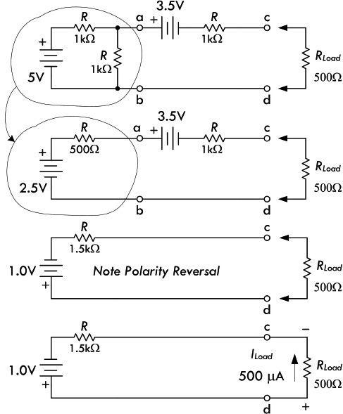
Here we’re interested in finding the current that will flow through a load resistor Rload when attached to terminals c and d. To simplify matters, first find the Thevenin equivalent circuit for everything to the left of a and b. Using the voltage divider and resistors-in-parallel formulas:
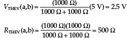
(Recall that we replaced the 5-V source with a short when finding RTHEV.)
Incorporating this equivalent circuit back into the main circuit, as shown in the second circuit down, we then determine the Thevenin equivalent circuit for everything to the left of c and d. Using Kirchhoff’s voltage law and resistors-in-series formulas:
VTHEV (c,d) = 2.5 V – 3.5 V = –1.0 V
(In terms of the diagram, this represents a polarity reversal, or simply flipping the battery.)
RTHEV (c,d) = 500 Ω + 1000 Ω = 1500 Ω
(Both sources were shorted to find RTHEV.)
Now we attach our load of 500 Ω and get the current:
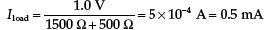
FIGURE 2.75
Example: To increase the current capacity, batteries are placed in parallel. If the internal resistance is 0.2 Ω for each 1.5-V battery, find the equivalent Thevenin circuit. Refer to Fig. 2.76.
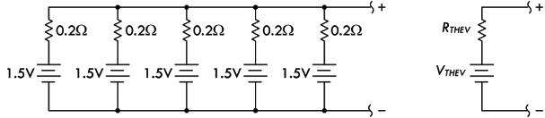
FIGURE 2.76
Answer:
RTHEV = 0.04 Ω, VTHEV = 1.5 V. (Apply Thevenin’s theorem in steps.) As you can see, the net internal resistance of the Thevenin circuit is much less—a result of placing batteries in parallel.
2.20 AC Circuits
A circuit is a complete conductive path through which electrons flow from source to load and back to source. As we’ve seen, if the source is dc, electrons will flow in only one direction, resulting in a direct current (dc). Another type of source that is frequently used in electronics is an alternating source that causes current to periodically change direction, resulting in an alternating current (ac). In an ac circuit, not only does the current change directions periodically, the voltage also periodically reverses.
Figure 2.77 shows a dc circuit and an ac circuit. The ac circuit is powered by a sinusoidal source, which generates a repetitive sine wave that may vary in frequency from a few cycles per second to billions of cycles per second, depending on the application.
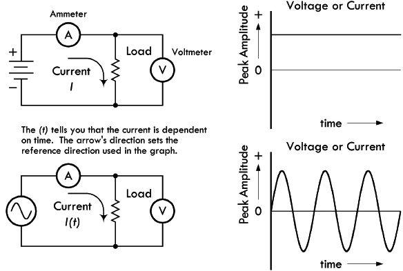
FIGURE 2.77
The positive and negative swings in voltage/current relative to a zero volt/amp reference line simply imply that the electromotive force of the source has switched directions, causing the polarity of the voltage source to flip, and forcing current to change directions. The actual voltage across the source terminals at a given instant in time is the voltage measured from the 0-V reference line to the point on the sinusoidal waveform at the specified time.
2.20.1 Generating AC
The most common way to generate sinusoidal waveforms is by electromagnetic induction, by means of an ac generator (or alternator). For example, the simple ac generator in Fig. 2.78 consists of a loop of wire that is mechanically rotated about an axis while positioned between the north and south poles of a magnet. As the loop rotates in the magnetic field, the magnetic flux through it changes, and charges are forced through the wire, giving rise to an effective voltage or induced voltage. According to Fig. 2.78, the magnetic flux through the loop is a function of the angle of the loop relative to the direction of the magnetic field. The resultant induced voltage is sinusoidal, with angular frequency ω (radians per second).
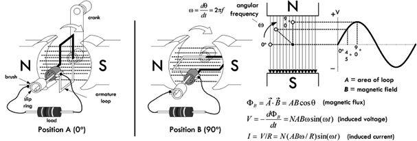
FIGURE 2.78 Simple ac generator.
Real ac generators are, of course, more complex than this, but they operate under the same laws of induction, nevertheless. Other ways of generating ac include using a transducer (e.g., a microphone) or even using a dc-powered oscillator circuit that uses special inductive and capacitive effects to cause current to resonate back and forth between an inductor and a capacitor.
Why Is AC Important?
There are several reasons why sinusoidal waveforms are important in electronics. The first obvious reason has to do with the ease of converting circular mechanical motion into induced current via an ac generator. However, another very important reason for using sinusoidal waveforms is that if you differentiate or integrate a sinusoid, you get a sinusoid. Applying sinusoidal voltage to capacitors and inductors leads to sinusoidal current. It also avoids problems on systems, a subject that we’ll cover later. But one of the most important benefits of ac involves the ability to increase voltage or decrease voltage (at the expense of current) by using a transformer. In dc, a transformer is useless, and increasing or decreasing a voltage is a bit tricky, usually involving some resistive power losses. Transformers are very efficient, on the other hand, and little power is lost in the voltage conversion.
2.20.2 Water Analogy of AC
Figure 2.79 shows a water analogy of an ac source. The analogy uses an oscillating piston pump that moves up and down by means of a cam mechanism, driven by a hand crank.
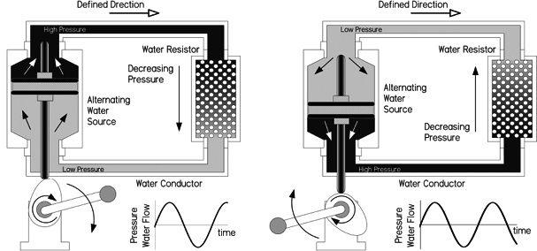
FIGURE 2.79
In the water analogy, water particles, on average, appear to simply swish back and forth as the crank is turned. In an ac electrical circuit, a similar effect occurs, though things are a bit more complex. One way to envision what’s going on is that within a conductor, the drift velocity of the sea of electrons is being swished back and forth in a sinusoidal manner. The actual drift velocity and distance over which the average drift occurs are really quite small (fractions of millimeter-per-second range, depending on conductor and applied voltage). In theory, this means that there is no net change in position of an “average” electron over one complete cycle. (This is not to be confused with an individual electron’s thermal velocity, which is mostly random, and at high velocity.) Also, things get even more complex when you start applying high frequencies, where the skin effect enters the picture—more on this later.
2.20.3 Pulsating DC
If current and voltage never change direction within a circuit, then from one perspective, we have a dc current, even if the level of the dc constantly changes. For example, in Fig. 2.80, the current is always positive with respect to 0, though it varies periodically in amplitude. Whatever the shape of the variations, the current can be referred to as “pulsating dc.” If the current periodically reaches 0, it is referred to as “intermittent dc.”
FIGURE 2.80
From another perspective, we may look at intermittent and pulsating dc as a combination of an ac and a dc current. Special circuits can separate the two currents into ac and dc components for separate analysis or use. There are also circuits that combine ac and dc currents and voltages.
2.20.4 Combining Sinusoidal Sources
Besides combining ac and dc voltages and currents, we can also combine separate ac voltages and currents. Such combinations will result in complex waveforms. Figure 2.81 shows two ac waveforms fairly close in frequency, and their resultant combination. The figure also shows two ac waveforms dissimilar in both frequency and wavelength, along with the resultant combined waveform.
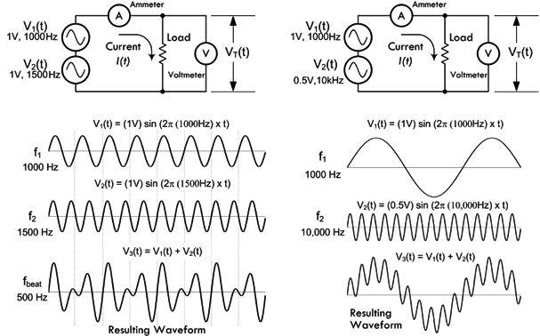
FIGURE 2.81 (Left) Two ac waveforms of similar magnitude and close in frequency form a composite wave. Note the points where the positive peaks of the two waves combine to create high composite peaks: this is the phenomenon of beats. The beat note frequency is f2 – f1 = 500 Hz. (Right) Two ac waveforms of widely different frequencies and amplitudes form a composite wave in which one wave appears to ride upon the other.
Later we will discover that by combining sinusoidal waveforms of the same frequency—even though their amplitudes and phases may be different—you always get a resultant sine wave. This fact becomes very important in ac circuit analysis.
2.20.5 AC Waveforms
Alternating current can take on many other useful wave shapes besides sinusoidal. Figure 2.82 shows a few common waveforms used in electronics. The squarewave is vital to digital electronics, where states are either true (on) or false (off). Triangular and ramp waveforms—sometimes called sawtooth waves—are especially useful in timing circuits. As we’ll see later in the book, using Fourier analysis, you can create any desired shape of periodic waveform by adding a collection of sine waves together.
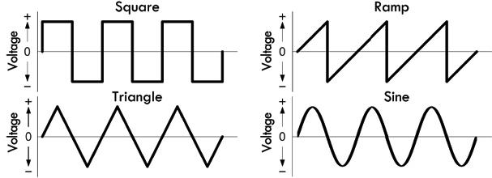
FIGURE 2.82
An ideal sinusoidal voltage source will maintain its voltage across its terminals regardless of load—it will supply as much current as necessary to keep the voltage the same. An ideal sinusoidal current source, on the other hand, will maintain its output current, regardless of the load resistance. It will supply as much voltage as necessary to keep the current the same. You can also create ideal sources of other waveforms. Figure 2.83 shows schematic symbols for an ac voltage source, an ac current source, and a clock source used to generate squarewaves.
FIGURE 2.83
In the laboratory, a function generator is a handy device that can be used to generate a wide variety of waveforms with varying amplitudes and frequencies.
2.20.6 Describing an AC Waveform
A complete description of an ac voltage or current involves reference to three properties: amplitude (or magnitude), frequency, and phase.
Figure 2.84 shows the curve of a sinusoidal waveform, or sine wave. It demonstrates the relationship of the voltage (or current) to relative positions of a circular rotation through one complete revolution of 360°. The magnitude of the voltage (or current) varies with the sine of the angle made by the circular movement with respect to the zero point. The sine of 90° is 1, which is the point of maximum current (or voltage); the sine of 270° is −1, which is the point of maximum reverse current (or voltage); the sine of 45° is 0.707, and the value of current (or voltage) at the 45° point of rotation is 0.707 times the maximum current (or voltage).
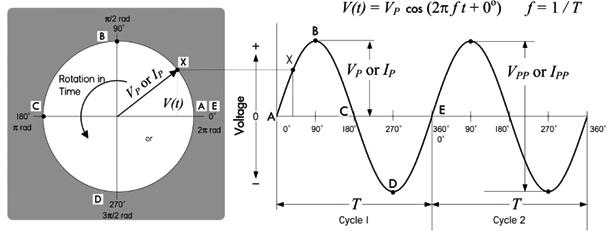
FIGURE 2.84
2.20.7 Frequency and Period
A sinusoidal waveform generated by a continuously rotating generator will generate alternating current (or voltage) that will pass through many cycles over time. You can choose an arbitrary point on any one cycle and use it as a marker—say, for example, the positive peak. The number of times per second that the current (or voltage) reaches this positive peak in any one second is called the frequency of the ac. In other words, frequency expresses the rate at which current (or voltage) cycles occur. The unit of frequency is cycles per second, or hertz—abbreviated Hz (after Heinrich Hertz).
The length of any cycle in units of time is the period of the cycle, as measured from two equivalent points on succeeding cycles. Mathematically, the period is simply the inverse of the frequency:
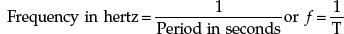
(2.22)
and
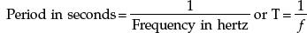
(2.23)
Example: What is the period of a 60-Hz ac current?
Answer:
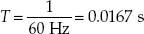
Example: What is the frequency of an ac voltage that has period of 2 ns?
Answer:
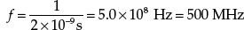
The frequency of alternating current (or voltage) in electronics varies over a wide range, from a few cycles per second to billions of cycles per second. To make life easier, prefixes are used to express large frequencies and small periods. For example: 1000 Hz = 1 kHz (kilohertz), 1 million hertz = 1 MHz (megahertz), 1 billion hertz = 1 GHz (gigahertz), 1 trillion hertz = 1 THz (terahertz). For units smaller than 1, as in the measurements of period, the basic unit of a second can become millisecond (1 thousandth of a second, or ms), microsecond (1 millionth of a second, or μs), nanosecond (1 billionth of a second, or ns), and picosecond (1 trillionth of a second, or ps).
2.20.8 Phase
When graphing a sine wave of voltage or current, the horizontal axis represents time. Events to the right on the graph take place later, while events to the left occur earlier. Although time can be measured in seconds, it actually becomes more convenient to treat each cycle of a waveform as a complete time unit, divisible by 360°. A conventional starting point for counting in degrees is 0°—the zero point as the voltage or current begins a positive half cycle. See Fig. 2.85a.
FIGURE 2.85 (a) An ac cycle is divided into 360° that are used as a measure of time or phase. (b) When two waves of the same frequency start their cycles at slightly different times, the time difference or phase difference is measured in degrees. In this drawing, wave B starts 45° (one-eighth cycle) later than wave A, and so lags 45° behind A. (c and d) Two special cases of phase difference: In (c) the phase difference between A and B is 90°; in (d) the phase difference is 180°.
By measuring the ac cycle this way, it is possible to do calculations and record measurements in a way that is independent of frequency. The positive peak voltage or current occurs at 90° during a cycle. In other words, 90° represents the phase of the ac peak relative to the 0° starting point.
Phase relationships are also used to compare two ac voltage or current waveforms at the same frequency, as shown in Fig. 2.85b. Since waveform B crosses the zero point in the positive direction after A has already done so, there is a phase difference between the two waveforms. In this case, B lags A by 45°; alternatively, we can say that A leads B by 45°. If A and B occur in the same circuit, they add together, producing a composite sinusoidal waveform at an intermediate phase angle relative to the individual waveforms. Interestingly, adding any number of sine waves of the same frequency will always produce a sine wave of the same frequency—though the magnitude and phase may be unique.
In Fig. 2.85c we have a special case where B lags A by 90°. B’s cycle begins exactly one-quarter cycle after A’s. As one waveform passes through zero, the other just reaches its maximum value.
Another special case occurs in Fig. 2.85d, where waveforms A and B are 180° out of phase. Here it doesn’t matter which waveform is considered the leading or lagging waveform. Waveform B is always positive when waveform A is negative, and vice versa. If you combine these two equal voltage or current waveforms together within the same circuit, they completely cancel each other out.
2.21 AC and Resistors, RMS Voltage, and Current
Alternating voltages applied across a resistor will result in alternating current through the resistor that is in phase with the voltage, as seen in Fig. 2.86. Given the ac voltage and resistance, you can apply Ohm’s law and find the ac current. For example, a sinusoidal waveform generated by a function generator can be mathematically described by:
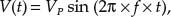
(2.24)
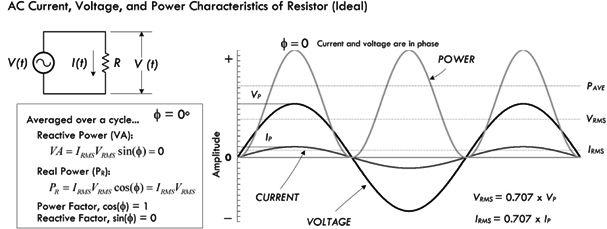
FIGURE 2.86
where VP is the peak amplitude of the sinusoidal voltage waveform, f is the frequency, and t is the time. Using Ohm’s law and the power law, you get the following:
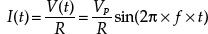
(2.25)
If you graph both V(t) and I(t) together, as shown in Fig. 2.86, you notice that the current and the voltage are in phase with each other. As the voltage increases in one direction, the current also increases in the same direction. Thus, when an ac source is connected to a purely resistive load, the current and voltage are in phase. If the load isn’t purely resistive (e.g., has capacitance and inductance), it’s a whole different story—more on that later.
To find the power dissipated by the resistor under sinusoidal conditions, we can simply plug the sinusoidal voltage expression into Ohm’s power law to get an instantaneous power expression:
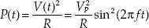
(2.26)
Expressing voltage, current, and power in an instantaneous fashion is fine, mathematically speaking; however, in order to get a useful result, you need to plug in a specific time—say, t = 1.3 s. But how often do you need to know that the voltage, current, or power are at exactly t = 1.3 s? Better yet, when do you start counting? These instantaneous values are typically inconvenient for any practical use. Instead, it is more important to come up with a kind of averaging scheme that can be used to calculate effective power dissipation without dealing with sinusoidal functions.
Now, you might be clever and consider averaging the sinusoidal voltage or current over a complete cycle to get some meaningful value. However, the average turns out to be zero—positive and negative sides of waveforms cancel. This may be a bit confusing, in terms of power, since the positive-going part of the wave still delivers energy, as does the negative-going part. If you’ve ever received a shock from 120-V line voltage, you’ll be able to attest to that.
The measurement that is used instead of the average value is the RMS or root mean square value, which is found by squaring the instantaneous values of the ac voltage or current, then calculating their mean (i.e., their average), and finally taking the square root of this—which gives the effective value of the ac voltage or current. These effective, or RMS, values don’t average out to zero and are essentially the ac equivalents of dc voltages and currents. The RMS values of ac voltage and current are based upon equating the values of ac and dc power required to heat a resistive element to exactly the same degree. The peak ac power required for this condition is twice the dc power needed. Therefore, the average ac power equivalent to a corresponding average dc power is half the peak ac power.
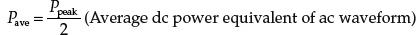
(2.27)
Mathematically, we can determine the RMS voltage and current values for sinusoidal waveforms V(t) = VP sin (2π × f × t), and I(t) = IP sin (2π × f × t):
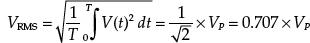
(2.28) RMS voltage
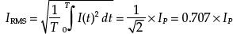
(2.29) RMS current
Notice that the RMS voltage and current depend only on the peak voltage or current—they are independent of time or frequency. Here are the important relations, without the scary calculus:
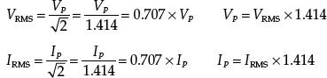
For example, a U.S. electric utility provides your home with 60 Hz, 120 VAC (in Europe and many other countries it’s 50 Hz, 240V AC). The “VAC” unit tells you that the supplied voltage is given in RMS. If you were to attach an oscilloscope to the outlet, the displayed waveform on the screen would resemble the following function: V(t) = 170 V sin (2π × 60 Hz × t), where 170 V is the peak voltage.
With our new RMS values for voltage and current, we can now substitute them into Ohm’s law to get what’s called ac Ohm’s law:
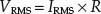
(2.30) ac Ohm’s law
Likewise, we can use the RMS voltage and current and substitute them into Ohm’s power law to get what’s called the ac power law, which gives the effective power dissipated (energy lost per second):
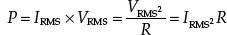
(2.31) ac power law
Again, these equations apply only to circuits that are purely resistive, meaning there is virtually no capacitance and/or inductance. Doing power calculation on circuits with inductance and capacitance is a bit more complicated, as we’ll see a bit later.
Figure 2.87 shows the relationships between RMS, peak, peak-to-peak and half-wave average values of voltage and current. Being able to convert from one type to another is important, especially when dealing with component maximum voltage and current ratings—sometimes you’ll be given the peak value, other times the RMS value. Understanding the differences also becomes crucial when making test measurements—see the note on pages 91–92 about making RMS test measurements. Most of the time, when dealing with ac voltage you can assume that voltage is expressed as an RMS value unless otherwise stated.
Conversion Factors for AC Voltage and Current
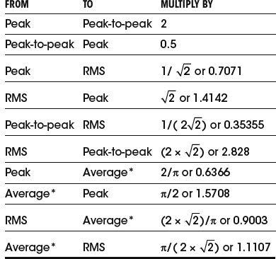
* Represents average over half a cycle.
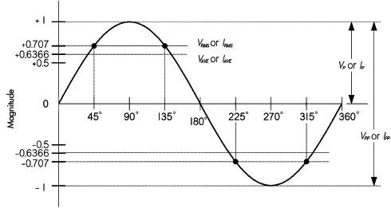
FIGURE 2.87
Example 1: How much current would flow through a 100-Ω resistor connected across the hot and neutral sockets of a 120-VAC outlet? How much power would be dissipated? What would the results be using 1000-Ω, 10,000-Ω, and 100,000-Ω resistors?
Answer:
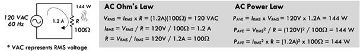
FIGURE 2.88
First, don’t try this with any ordinary resistor; you’d need a power resistor or special heating element with a power rating of greater than 144 W! (Also, simply don’t attempt attaching a resistor with the outlets powered.) A 1000-Ω resistor plugged into the same outlet would dissipate 14.4 W; a 10,000-Ω resistor would dissipate 1.44 W; a 100,000-Ω resistor would dissipate 0.14 W.
Example 2: What is the peak voltage on a capacitor if the RMS voltage of a sinusoidal waveform signal across it is 10.00 VAC?
Answer: VAC means RMS, so VP =  × VRMS = 1.414 × 10 V = 14.14 V.
× VRMS = 1.414 × 10 V = 14.14 V.
Example 3: A sinusoidal voltage displayed on an oscilloscope has a peak amplitude of 3.15 V. What is the RMS value of the waveform?
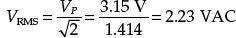
Example 4: A 200-W resistive element in a heater is connected to a 120-VAC outlet. How much current is flowing through the resistive element? What’s the resistance of the element, assuming it’s an ideal resistor?
Answer:
IRMS = PAVE/VRMS = 200 W/120 VAC = 1.7 A. R = VRMS/IRMS = 120 V/1.7 A = 72 Ω.
Example 5: A sinusoidal voltage supplied by a function generator is specified as 20 V peak to peak at 1000 Hz. What is the minimum resistance value of a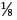-W resistor you can place across the generator’s output before exceeding the resistor’s power rating?
Answer:
VP = 1/2 VP−P = 10 V; VRMS = 0.707 × VP = 7.1 VAC; R = VRMS2/PAVE = (7.1)2/(1/8 W) = 400 Ω.
Example 6: The output of an oscillator circuit is specified as 680 mVAC. If you feed this into an op amp with an input resistance of 10 MΩ, how much current enters the IC?
Answer:
IRMS = VRMS/R = 0.68 V/(10,000,000 Ω) = 0.000000068 = 68 nA.
MEASURING RMS VOLTAGES AND CURRENTS
There are many digital multimeters that do not measure the RMS value of an ac voltage directly. Often the meter will simply measure the peak value and calculate the equivalent RMS value—assuming the measured waveform is sinusoidal—and then display this value. Analog meters usually measure the half-wave average value, but are made to indicate the equivalent RMS.
True RMS multimeters, on the other hand, measure the true RMS value of voltages and current, and are especially handy for nonsinusoidal voltage and currents. Though relatively expensive, these meters are worth the price. It’s important to note that true RMS meters will also include the contribution of any dc voltages or current components present along with the ac.
Fortunately, you can still get a fairly accurate idea of the RMS value of a sine waveform, knowing one of the other measurements such as the half-wave average, peak, or peak-to-peak value. This can be done by calculation, or using the table in Fig. 2.89. As you can see, it’s also possible to work out the RMS value of a few other symmetrical and regular waveforms, such as square and triangular waves, knowing their peak, average, or peak-to-peak values.
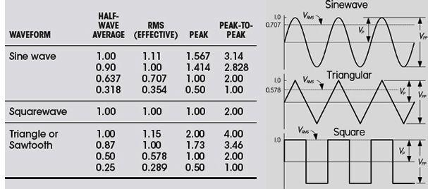
FIGURE 2.89
An important thing to note when using the table is that you need to know the exact basis on which your meter’s measurement is made. For example, if your meter measures the peak value, and then calculates and displays the equivalent sine wave RMS figure, this means you’ll need to use the table differently when compared to the situation where the meter really measures the half-wave average and calculates the sine wave RMS figure from that. So take care, especially if you’re not sure exactly how your meter works.
2.22 Mains Power
In the United States, three wires run from the pole transformers (or underground or surface enclosed transformer) to the main service panel at one’s home. One wire is the A-phase wire (usually black in color), another is the B-phase wire (usually black in color), and the third is the neutral wire (white in color). Figure 2.90 shows where these three wires originate from the pole transformer. The voltage between the A-phase and the B-phase wires, or the hot-to-hot voltage, is 240 V, while the voltage between the neutral wire and either the A-phase or the B-phase wire, or the neutral-to-hot voltage, is 120 V. (These voltages are nominal and may vary from region to region, say 117 V instead of 120 V.)
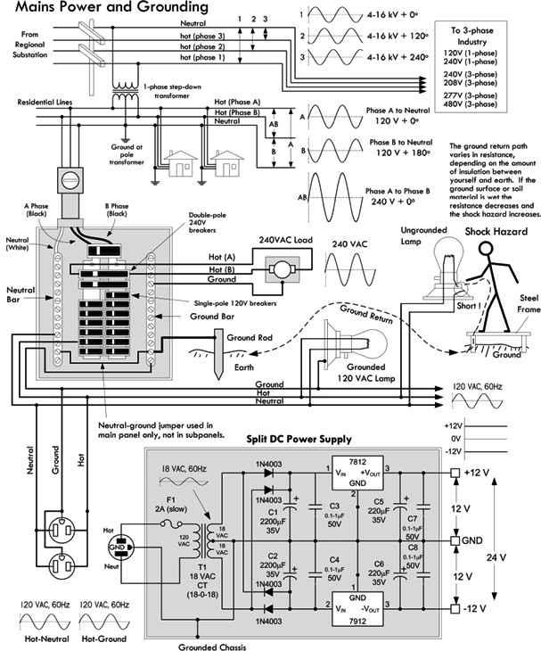
FIGURE 2.90
At the home, the three wires from the pole/green box transformer are connected through a wattmeter and then enter a main service panel that is grounded to a long copper rod driven into the ground or to the steel in a home’s foundation. The A-phase and B-phase wires that enter the main panel are connected through a main disconnect breaker, while the neutral wire is connected to a terminal referred to as the neutral bar or neutral bus. A ground bar also may be present within the main service panel. The ground bar is connected to the grounding rod or to the foundation’s steel supports.
Within the main service panel, the neutral bar and the ground bar are connected together (they act as one). However, within subpanels (service panels that get their power from the main service panel but which are located some distance from the main service panel), the neutral and ground bars are not joined together. Instead, the subpanel’s ground bar receives a ground wire from the main services panel. Often the metal conduit that is used to transport the wires from the main service panel to the subpanel is used as the ground wire. However, for certain critical applications (e.g., computer and life-support systems), the ground wire probably will be included within the conduit. Also, if a subpanel is not located in the same building as the main panel, a new ground rod typically is used to ground the subpanel. Note that different regions within the United States may use different wiring protocols. Therefore, do not assume that what I am telling you is standard practice where you live. Contact your local electrical inspector.
Within the main service panel, there are typically two bus bars into which circuit breaker modules are inserted. One of these bus bars is connected to the A-phase wire; the other bus bar is connected to the B-phase wire. To power a group of 120-V loads (e.g., upstairs lights and 120-V outlets), you throw the main breaker to the off position and then insert a single-pole breaker into one of the bus bars. (You can choose either the A-phase bus bar or the B-phase bus bar. The choice of which bus bar you use becomes important only when it comes to balancing the overall load—more on that in a moment.) Next, you take a 120-V three-wire cable and connect the cable’s black (hot) wire to the breaker, connect the cable’s white (neutral) wire to the neutral bar, and connect the cable’s ground wire (green or bare) to the ground bar. You then run the cable to where the 120-V loads are located, connect the hot and neutral wires across the load, and fasten the ground wire to the case of the load (typically a ground screw is supplied on an outlet mounting or light figure for this purpose). To power other 120-V loads that use their own breakers, you basically do the same thing you did in the last setup. However, to maximize the capacity of the main panel (or subpanel) to supply as much current as possible without overloading the main circuit breaker in the process, it is important to balance the total load current connected to the A-phase breakers with the total load current connected to the B-phase breakers. This is referred to as “balancing the load.”
Now, if you want to supply power to 240-V appliances (ovens, washers, etc.), you insert a double-pole breaker between the A-phase and B-phase bus bars in the main (or subpanel). Next, you take a 240-V three-wire cable and attach one of its hot wires to the A-phase terminal of the breaker and attach its other hot wire to the B-phase terminal of the breaker. The ground wire (green or bare) is connected to the ground bar. You then run the cable to where the 240-V loads are located and attach the wires to the corresponding terminals of the load (typically within a 240-V outlet). Also, 120-V/240-V appliances are wired in a similar manner, except you use a four-wire cable that contains an additional neutral (white) wire that is joined at the neutral bar within the main panel (or subpanel).
In addition, in many places, modifications to mains wiring must be carried out or checked by a certified electrician. As a note of caution, do not attempt home wiring unless you are sure of your abilities. If you feel that you are capable, just make sure to flip the main breaker off before you start work within the main service panel. When working on light fixtures, switches, and outlets that are connected to an individual breaker, tag the breaker with tape so that you do not mistakenly flip the wrong breaker when you go back to test your connections.
2.23 Capacitors
If you take two oppositely charged parallel conducting plates separated a small distance apart by an insulator—such as air or a dielectric such as ceramic—you have created what’s called a capacitor. Now, if you apply a voltage across the plates of the capacitor using a battery, as shown in Fig. 2.91, an interesting thing occurs. Electrons are pumped out the negative battery terminal and collect on the lower plate, while electrons are drawn away from the upper plate into the positive battery terminal. The top plate becomes deficient in electrons, while the lower plate becomes abundant in electrons.
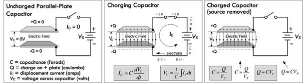
FIGURE 2.91
Very quickly, the top plate reaches a positive charge +Q and the negative plate reaches a negative charge −Q. Accompanying the charge is a resultant electric field between the plates and a voltage equal to the battery voltage.
The important thing to notice with our capacitor is that when we remove the voltage source (battery), the charge, electric field, and corresponding voltage (presently equal to the battery voltage) remain. Ideally, this state of charge will be maintained indefinitely. Even attaching an earth ground connection to one of the plates—doesn’t matter which one—will not discharge the system. For example, attaching an earth ground to the negative terminal doesn’t cause the electrons within that plate to escape to the earth ground where neutral charge is assumed. (See Fig. 2.92.)
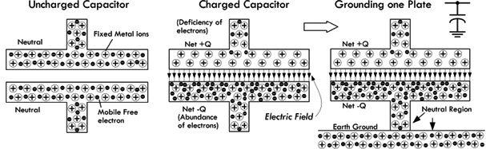
FIGURE 2.92
It might appear that the abundance of electrons would like to escape to the earth ground, since it is at a lower potential (neutral). However, the electric field that exists within the capacitor acts like a glue; the positive charge on the upper plate “holds” onto the abundance of electrons on the negative plate. In other words, the positive plate induces a negative charge in the grounded plate.
In reality, a real-life charged capacitor that is charged and removed from the voltage source would eventually lose its charge. The reason for this has to do with the imperfect insulating nature of the gas or dielectric that is placed between the plates. This is referred to as leakage current and, depending on the construction of the capacitor, can discharge a capacitor within as little as a few seconds to several hours, if the source voltage is removed.
To quickly discharge a capacitor you can join the two plates together with a wire, which creates a conductive path for electrons from the negative plate to flow to the positive plate, thus neutralizing the system. This form of discharge occurs almost instantaneously.
The ratio of charge on one of the plates of a capacitor to the voltage that exists between the plates is called capacitance (symbolized C):
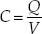
(2.32) Capacitance related to charge and voltage
C is always taken to be positive, and has units of farads (abbreviated F). One farad is equal to one coulomb per volt:
1 F = 1 C/1 V
Devices that are specifically designed to hold charge (electrical energy in the form of an electric field) are called capacitors. Figure 2.93 shows various symbols used to represent capacitors, along with a real capacitor model that we’ll discuss a bit later.
FIGURE 2.93
The equation C = Q/V is a general one; it really doesn’t tell you why one capacitor has a larger or smaller capacitance than another. However, in practice, when you buy a capacitor all you’ll be interested in is the capacitance value labeled on the device. (A voltage rating and other parameters are important, too, but we’ll talk about them later.) Most commercial capacitors are limited to a range from 1 pF (1 × 10−12 F) to 4700 μF (1 × 10−6 F), with typical values for the first two digits of the capacitance of 10, 12, 15, 18, 22, 27, 33, 39, 47, 56, 68, 82, 100. (Examples: 27 pF, 100 pF, 0.01 μF, 4.7 μF, 680 μF).
Having a wide range of capacitances allows you to store different amounts of charge for a given potential difference, as well as maintaining different potential differences for a given charge. With the appropriate capacitor, you can therefore control the storage and delivery of charge, or control potential differences.
Example 1: Five volts are applied across a 1000-μF capacitor until the capacitor is fully charged. How much charge exists on the positive and negative plates?
Answer:
Q = CV = (1000 × 10−6 F)(5 V) = 5 × 10−3 C. This is the charge on the positive plate. The charge on the negative plate is the same, but opposite in sign.
Example 2: A 1000-μF capacitor and a 470-μF capacitor are arranged in the circuit shown in Fig. 2.94, with a 10-V dc supply. Initially, the switch is at position B then thrown to position A, and then thrown to position B, and then to position A, and finally to position B. Assuming the capacitors have enough time to fully charge or discharge during the interval between switches, what is the final voltage across each capacitor after the last switch takes place?
FIGURE 2.94
Answer: When the switch is thrown from B to A the first time, C1 charges to:
Q1 = C1V = (1000 × 10−6 F)(10 V) = 0.01 C
When the switch is then thrown to B, the circuit becomes essentially one big capacitor equal to C1 + C2 or 1470 μF. Charge will flow from C1 to C2, since the system wants to go to the lowest energy configuration. The charge on each capacitor is the percentage of capacitance to the total capacitance for each capacitor multiplied by the initial charge on C1 before the switch was thrown to position B:
The voltage at the new equilibrium is:
V1 = Q1/C1 = 0.0068/1000 μF = 6.8 V
V2 = Q2/C2 = 0.0032/470 μF = 6.8 V
The rest of the results are obtained in using similar calculations—the final result yields 9.0 V, as shown in the graph to the right.
We could be content with this limited knowledge. However, if you want to build your own capacitors, as well as understand time-dependent behavior, such as displacement current and capacitive reactance, a deeper understanding of capacitance is needed.
2.23.1 Determining Capacitance
The capacitance of a capacitor is determined by plate area A, plate separation d, and insulating material or dielectric. If a voltage V is applied between two parallel plates, an electric field equal to E = V/d will be produced. From Gauss’s law, each plate must contain an equal and opposite charge given by:
(2.33)
where ε is the permittivity of the dielectric. Free space (vacuum) has a permittivity given by:
(2.34)
The constant εA/d term in the equation is the capacitance,
(2.35)
The relative permittivity of a material referenced to the permittivity in vacuum is referred to as the dielectric constant, which is given by:
Plugging this into the previous expression, we get the capacitance in terms of dielectric constant:
(2.36)
where C is in farads, A is in meters squared, and d is in meters.
The dielectric constant varies from 1.00059 for air (1 atm) to over 105 for some types of ceramic. Table 2.6 shows relative dielectric constants for various materials often used in constructing capacitors.
Capacitors often have more than two plates, the alternate plates being connected to form two sets, as shown in the lower drawing in Fig. 2.95. This makes it possible to obtain a fairly large capacitance in a small space. For a multiple-plate capacitor, we use the following expression to find the capacitance:
(2.37)
FIGURE 2.95
where the area A is in meters squared, the separation d is in meters, and the number of plates n is an integer.
Example: What is the capacitance of a multiple-plate capacitor containing two plates, each with an area of 4 cm2, a separation of 0.15 mm, and a paper dielectric?
Answer:
2.23.2 Commercial Capacitors
Commercial capacitors, like those shown in Fig. 2.95, are constructed from plates of foil with a thin solid or liquid dielectric sandwiched between, so relatively large capacitance can be obtained in a small unit. The solid dielectrics commonly used are mica, paper, polypropylene, and special ceramics.
Electrolytic capacitors use aluminum-foil plates with a semiliquid conducting chemical compound between them. The actual dielectric is a very thin film of insulating material that forms on one set of the plates through electrochemical action when a dc voltage is applied to the capacitor. The capacitance obtained with a given area in an electrolytic capacitor is very large compared to capacitors having other dielectrics, because the film is so thin—much less than any thickness practical with a solid dielectric. Electrolytic capacitors, due to the electrochemical action, require that one lead be placed at a lower potential than the other. The negative lead (−) is indicated on the package, and some surface mount electrolytics mark the positive end. This polarity adherence means that, with the exception of special nonpolarized electrolytics, electrolytic capacitors shouldn’t be used in ac applications. It is okay to apply a superimposed ac signal riding upon a dc voltage, provided the peak voltage doesn’t exceed the maximum dc voltage rating of the electrolytic capacitor.
2.23.3 Voltage Rating and Dielectric Breakdown
The dielectric within a capacitor acts as an insulator—its electrons do not become detached from atoms the way they do in conductors. However, if a high enough voltage is applied across the plates of the capacitor, the electric field can supply enough force on electrons and nuclei within the dielectric to detach them, resulting in a breakdown in the dielectric. Failed dielectrics often puncture and offer a low-resistance current path between the two plates.
The breakdown voltage of a dielectric depends on the dielectric’s chemical composition and thickness. A gas dielectric capacitor breakdown is displayed as a spark or arc between the plates. Spark voltages are typically given in units of kilovolts per centimeter. For air, the spark voltage may range from 100 kV/cm for gaps as narrow as 0.005 cm to 30 kV/mm for gaps as wide as 10 cm. Other things that contribute to the exact breakdown voltage level are electrode shape, gap distance, air pressure or density, the voltage, impurities within the dielectric, and the nature of the external circuit (air humidity, temperature, etc.).
Dielectric breakdown can occur at a lower voltage between points or sharp-edged surfaces than between rounded and polished surfaces, since electric fields are more concentrated at sharp projections. This means that the breakdown voltage between metal plates can be increased by buffing the edges to remove any sharp irregularities. If a capacitor with a gas dielectric, such as air, experiences breakdown, once the arc is extinguished, the capacitor can be used again. However, if the plates become damaged due to the spark, they may require polishing, or the capacitor may need to be replaced. Capacitors with solid dielectrics are usually permanently damaged if there is dielectric breakdown, often resulting in a short or even an explosion.
Manufacturers provide what’s called a dielectric withstanding voltage (dwv), expressed in voltage per mil (0.001 in) at a specified temperature. They also provide a dc working voltage (dcwv) that takes into account other factors such as temperature and safety margin, which gives you a guideline to the maximum safe limits of dc voltage that can be applied before dielectric breakdown. The dcwv rating is most useful in practice.
As a rule of thumb, it is not safe to connect a capacitor across an ac power line unless it is designed for it. Most capacitors with dc ratings may short the line. Special ac-rated capacitors are available for such tasks. When used with other ac signals, the peak value of ac voltage should not exceed the dc working voltage.
2.23.4 Maxwell’s Displacement Current
An interesting thing to notice with our parallel-plate capacitor is that current appears to flow through the capacitor as it is charging and discharging, but doesn’t flow under steady dc conditions. You may ask: How is it possible for current to flow through a capacitor, ever, if there is a gap between the plates of the capacitor? Do electrons jump the gap? As it turns out, no actual current (or electron flow) makes it across the gap, at least in an ideal capacitor.
As we calculated a moment ago using Gauss’s law, the charge on an air-filled capacitor plate can be expressed in terms of the electric field, area, and permittivity of free space:
(2.38)
Some time ago, Scottish physicist James Clerk Maxwell (1831–1879) noted that even if no real current passed from one capacitor plate to the other, there was nevertheless a changing electric flux through the gap of the capacitor that increased and decreased with the magnitude and direction of the electric flux. (Electric flux for a parallel-plate capacitor is approximated by ΦE = EA, while a changing electric flux is expressed as dΦE/dt). Maxwell believed the electric flux permeated the empty space between the capacitor plates and induced a current in the other plate. Given the state of knowledge of electrodynamics at the time, he envisioned a displacement current (which he coined) crossing the empty gap, which he associated with a kind of stress within the ether (accepted at the time)—the “stress” being electric and magnetic fields. (The displacement current helped supply Maxwell with the missing component to complete a set of electromagnetic formulas known as Maxwell’s equations.) He associated the displacement current with displacements of the ether. With a bit of theoretical reckoning, as well as some help from some experimental data, he came up with the following equation, known as the displacement current, to explain how current could appear to enter one end of a capacitor and come out the other end.
(2.39)
Maxwell’s displacement expression appears to provide the correct answer, even though his notion of the ether has lost favor in the realm of physics. Modern physics provides a different model for displacement current than that envisioned by Maxwell and his ether. Nevertheless, the results obtained using Maxwell’s equation closely correlate with experiment.
As a side note, there also exists a magnetic field due to the displacement current, as shown in the drawing on the right in Fig. 2.96. You can calculate the magnetic field using what’s called Maxwell’s generalized form of Ampere’s law; however, the size of the magnetic field turns out to be so small that it essentially has no practical influence when compared to the electric field.
FIGURE 2.96
However deep you go when trying to explain the physical phenomena within a capacitor, such as using Maxwell’s equations or even modern physics, the practical equations that are useful in electronics really don’t require such detail. Instead, you can simply stick with using the following charge-based model.
2.23.5 Charge-Based Model of Current Through a Capacitor
Though Maxwell’s displacement current provides a model to explain the apparent current flow through a capacitor in terms of changing electric fields, it really isn’t needed to define capacitor performance. Instead, we can treat the capacitor as a black box with two leads, and define some rules relating the current entering and exiting the capacitor as the applied voltage across the capacitor changes. We don’t need to worry about the complex physical behavior within.
Now, the question remains: how do we determine the rules if we don’t understand the complex behavior within? Simple—we use the general definition of capacitance and the general definition of current, and combine the two. Though the mathematics for doing this is simple, understanding why this makes logical sense is not entirely obvious. The following parallel-plate example provides an explanation. Refer to Fig. 2.97.
FIGURE 2.97
If we work in differentials (small changes), we can rewrite the general expression for capacitance as dQ = CdV, where C remains constant (with charge, voltage, or time). The general expression for current is I = dQ/dt, which, when combined with the last differential expression of capacitance, provides the expression:
(2.40) Apparent current “through” capacitor
Looking at Fig. 2.97, a “small” chunk dQ, which is equal to CdVc, enters the right plate during dt, while an equal-sized chunk exits the left plate. So a current equal to dQ/dt = CdVc/dt enters the left plate while an equal-sized current exits the right plate. (Negative electrons flow in the opposite direction.) Even though no actual current (or electrons) passes across the gap, Eq. 2.40 makes it appear that it does. After our little exercise using differentials, however, we can see that there is really no need to assume that a current must flow across the gap to get an apparent current flow “through” the capacitor.
Moving on, we can take the capacitor current expression just derived, rearrange things, and solve for the voltage across the capacitor:
(2.41) Voltage across capacitor
It’s important to note that these equations are representative of what’s defined as an ideal capacitor. Ideal capacitors, as the equation suggests, have several curious properties that are misleading if you are dealing with real capacitors. First, if we apply a constant voltage across an ideal capacitor, the capacitor current would be zero, since the voltage isn’t changing (dV/dt = 0). In a dc circuit, a capacitor thus acts like an open circuit. On the other hand, if we try to change the voltage abruptly, from 0 to 9 V, the quantity dV/dt = 9 V/0 V = infinity and the capacitor current would have to be infinite (see Fig. 2.98). Real circuits cannot have infinite currents, due to resistivity, available free electrons, inductance, capacitance, and so on, so the voltage across the capacitor cannot change abruptly. A more accurate representation of a real capacitor, considering construction and materials, looks like the model shown in Fig. 2.93.
Under steady-state dc, a capacitor cannot pass current. It can only store or discharge charge (which it collects from current) when the voltage across it changes. Here, when the “charge switch” is closed (shorted), the 9-V battery voltage is applied instantly across the capacitor. In a real capacitor, the capacitor charges up to its maximum value practically instantly. But upon closer examination, the charge takes time to build up, due to internal resistance, meaning the displacement current cannot reach infinity. Instead, the current jumps to Vbattery/Rinternal and quickly drops exponentially as the capacitor reaches full charge, during which the voltage rises exponentially until it levels off at the applied voltage. The graph to the left shows voltage and current curves as the capacitor charges up. Note the impossible behavior that an ideal treatment of a capacitor introduces.
When the discharge switch is closed, a conductive path from positive to negative plate is made, and charge electrons will flow to the plate with a deficiency of electrons. The current that results is in the opposite direction as the charging current, but resembles it in that it initially peaks to a value of Vbattery/Rinternal and decays as the charge neutralizes. The voltage drops exponentially in the process.
FIGURE 2.98
If the equations for an ideal capacitor are screwy, what do we do for real-life calculations? For the most part, you don’t have to worry, because the capacitor will be substituted within a circuit that has resistance, which eliminates the possibility of infinite currents. The circuit resistance is also usually much greater than the internal resistance of the capacitor, so that the internal resistance of the capacitor can typically be ignored. In a minute, we’ll see a few resistor-capacitor circuits that will demonstrate this.
2.23.6 Capacitor Water Analogy
For those of you who are having problems with the previous explanations of apparent or displacement current, perhaps the following water analogy will help. Take it with a grain of salt, however, since what’s going on in a real capacitor isn’t analogous in all regards. Refer to Fig. 2.99.
FIGURE 2.99
The water capacitor in Fig. 2.99 resembles a tube with a rubber membrane in the middle. The rubber membrane is somewhat analogous to the insulator or dielectric of a capacitor, while each separate compartment is analogous to each plate of a capacitor. If there is no pressure (analogous to voltage) across the water capacitor, each compartment contains the same amount of water (analogous to the number of free electrons). However, if pressure is suddenly applied across the water capacitor, the pressure within the top chamber increases, causing the membrane to expand downward, displacing water out from the lower chamber. Even though no water from the top makes it through the membrane, it appears as though current flows through the water capacitor, since the membrane is pushing the water within the lower chamber out. This is analogous to displacement current. Increasing the chamber size and altering the membrane strength are analogous to changing the capacitance and dielectric strength.
Example 1: A 10-μF capacitor is connected to a 50-mA constant current source. Determine the voltage across the capacitor after 10 μs, 10 ms, and 1 s.
Answer: Since IC is constant, it can be moved in front of the integral:
Example 2: A 47-μF capacitor is charged by the voltage sources having the following waveform. Determine the charging current. Refer to Fig. 2.100. Assume that the voltage source is ideal and has no resistance.
FIGURE 2.100
Answer: Since dV/dt represents the slope of the waveform, it is simply 10 V/10 ms, and the current becomes:
Example 3: If the voltage across a 100-μF capacitor is 5 V e−t, what is the capacitor current?
Answer:
(Remember, these examples assume ideal capacitors. If you used real capacitors, the results would follow the same trends, but would be limited in current.)
2.23.7 Energy in a Capacitor
Finally, energy cannot be dissipated in an ideal capacitor. (This is not the case for real capacitors because of internal resistance, but since the internal resistance is so small, that energy lost to heating is often ignored.) Energy can only be stored in the electric field (or potential that exists between the plates) for later recovery. The energy stored in a capacitor is found by substituting the capacitor current into the generalized power law (P = IV), then inserting the resulting power into the definition of power (P = dE/dt), and solving for E by integration:
(2.42)
Example: How much energy is stored in a 1000-μF capacitor with an applied voltage of 5 V?
Answer:
2.23.8 RC Time Constant
When a capacitor is connected to a dc voltage source, it will charge up almost instantaneously. (In reality, a capacitor has internal resistance, as well as inductance, therefore the term “almost”—see Sec. 3.6, on capacitors, for real-life characteristics.) Likewise, a charged capacitor that is shorted with a wire will discharge almost instantaneously. However, with some resistance added, the rate of charge or discharge follows an exponential pattern, as shown in Fig. 2.101. There are numerous applications that use controlled charge and discharge rates, such as timing ICs, oscillators, waveform shapers, and low-discharge power backup circuits.
FIGURE 2.101
For a charging capacitor, the following equations are used.
Current and voltage equations for RC charging circuit
(2.43)
where I is the current in amps, VS is the source voltage in volts, R is the resistance in ohms, C is the capacitance in farads, t is the time in seconds after the source voltage is applied, e = 2.718, VR is the resistor voltage in volts and VC is the capacitor voltage in volts. Graph shown to the left is for circuit with R = 10 kΩ, and C = 100 μF. Decreasing the resistance means the capacitor charges up more quickly and the voltage across the capacitor rises more quickly.
(You can derive the preceding expressions using Kirchhoff’s law, by summing the voltage around the closed loop: VS = RI + (1/C) ∫Idt. Differentiating and solving the differential equation, given an initial condition of current equal to V/R, the voltage across the resistor = VS, and the voltage across the capacitor VC = 0, you get the solution: I = (V/R)e−t/RC. The voltages across the resistor and capacitor are simply found by plugging the current into the expression for the voltage across a resistor VR = IR and the voltage across a capacitor: VC = (1/C) ∫Idt. We’ll discuss solving such circuits in detail in the section on transients in dc circuits.)
Theoretically, the charging process never really finishes, but eventually the charging current drops to an immeasurable value. A convention often used is to let t = RC, which makes V(t) = 0.632 V. The RC term is called the time constant of the circuit and is the time in seconds required to charge the capacitor to 63.2 percent of the supply voltage. The lowercase tau τ is often used to represent RC: τ = RC. After two time constants (t = 2RC = 2τ) the capacitor charges another 63.2 percent of the difference between the capacitor voltage at one time constant and the supply voltage, for a total change of 86.5 percent. After three time constants, the capacitor reaches 95 percent of the supply voltage, and so on, as illustrated in the graph in Fig. 2.101. After five time constants, a capacitor is considered fully charged, having reached 99.24 percent of the source voltage.
Example: An IC uses an external RC charging network to control its timing. The IC requires 3.4 V at VIN to trigger its output to switch from high to low, at which time an internal transistor (switch) is activated, allowing the capacitor to be discharged to ground. If a 5-s timing period before the trigger point is required, what value of R is required if C = 10 μF?
Answer: Use
and solve for R:
FIGURE 2.102
For a discharging capacitor, the following equations are used.
Current and voltage equations for discharging an RC circuit
(2.44)
where I is the current in amps, VS is the source voltage in volts, R is the resistance in ohms, C is the capacitance in farads, t is the time in seconds after the source voltage is removed, e = 2.718, VR is the resistor voltage in volts, and VC is the capacitor voltage in volts. Graph shown to the left in Fig. 2.103 is for circuit with R = 3 kΩ and C = 0.1 μF.
FIGURE 2.103
(You can derive this expression using Kirchhoff’s law, by summing the voltage around the closed loop: 0 = RI + (1/C) ∫Idt. Differentiating and solving the differential equation, given an initial condition of current equal to 0, the voltage across the resistor = 0, and the voltage across the capacitor VC = VS, you get the solution: I = (V/R)e−t/RC. The voltage across the resistor and capacitor is found simply by plugging the current into the expression for the voltage across a resistor VR = IR and the voltage across a capacitor: VC = (1/C) ∫Idt. We’ll discuss solving such circuits in detail in the section on transients in dc circuits.)
The expression for a discharging capacitor is essentially the inverse of that for a charging capacitor. After one time constant, the capacitor voltage will have dropped by 63.2 percent from the supply voltage, so it will have reached 37.8 percent of the supply voltage. After five time constants, the capacitor is considered fully discharged, it will have dropped 99.24 percent, or down to 0.76 percent of the supply voltage.
Example: If a 100-μF capacitor in a high-voltage power supply is shunted by a 100k resistor, what is the minimum time before the capacitor is considered fully discharged when power is turned off?
Answer: After five time constants, a capacitor is considered discharged:
t = 5τ = 5RC = (5)(100 × 103 Ω)(100 × 10−6 F) = 50 s
2.23.9 Stray Capacitance
Capacitance doesn’t exist only within capacitors. In fact, any two surfaces at different electrical potential, and that are close enough together to generate an electric field, have capacitance, and thus act like a capacitor. Such effects are often present within circuits (e.g., between conductive runs or component leads), even though they are not intended. This unintended capacitance is referred to as stray capacitance, and it can result in a disruption of normal current flow within a circuit. Designers of electric circuits figure out ways to minimize stray capacitance as much as possible, such as keeping capacitor leads short and grouping components in such a way as to eliminate capacitive coupling. In high-impedance circuits, stray capacitance may have a greater influence, since capacitive reactance (which we will discuss shortly) may be a greater portion of the circuit impedance. In addition, since stray capacitance usually appears in parallel with a circuit, it may bypass more of the desired signal at higher frequencies. Stray capacitance usually affects sensitive circuits more profoundly.
2.23.10 Capacitors in Parallel
When capacitors are placed in parallel, their capacitances add, just like resistors in series:
(2.45)
(You derive this formula by applying Kirchhoff’s current law at the top junction, which gives Itot = I1 + I2 + I3 + … IN. Making use of the fact that the voltage V is the same across C1 and C2, you can substitute the displacement currents for each capacitor into Kirchhoff’s current expression as follows:
The term in brackets is the equivalent capacitance.)
Intuitively, you can think of capacitors in parallel representing one single capacitor with increased plate surface area. It’s important to note that the largest voltage that can be applied safely to a group of capacitors in parallel is limited to the voltage rating of the capacitor with the lowest voltage rating. Both the capacitance and the voltage rating are usually included next to the capacitor symbol in schematics, but often the voltage rating is missing; you must figure out the rating based on the expected voltages present at that point in the circuit.
2.23.11 Capacitors in Series
When two or more capacitors are connected in series, the total capacitance is less than that of the smallest capacitor in the group. The equivalent capacitance is similar to resistors in parallel:
(2.46)
(You derive this by applying Kirchhoff’s voltage law. Since the current I must flow through each capacitor, Kirchhoff’s voltage expression becomes:
The term in parentheses is called the equivalent capacitance for capacitors in series.)
Capacitors may be connected in series to enable the group to withstand a larger voltage than any individual capacitor is rated to withstand (the maximum voltage ratings add). The trade-off is a decrease in total capacitance—though that could be what you intend to do, if you can’t find a capacitor or create a parallel arrangement that gives you the desired capacitance value. Notice in Fig. 2.104 that the voltage does not divide equally between capacitors. The voltage across a single capacitor—say, C2—is a fraction of the total, expressed as (Ctotal/C2)VIN. There are various circuits that tap the voltage between series capacitors.
FIGURE 2.104
Use care to ensure that the voltage rating of any capacitor in the group is not exceeded. If you use capacitors in series to withstand larger voltages, it’s a good idea to also connect an equalizing resistor across each capacitor. Use resistors with about 100 Ω per volt of supply voltage, and be sure they have sufficient power-handling capability. With real capacitors, the leakage resistance of the capacitor may have more effect on the voltage division than does the capacitance. A capacitor with a high parallel resistance will have the highest voltage across it. Adding equalizing resistors reduces this effect.
Example: (a) Find the total capacitance and maximum working voltage (WV) for the capacitor in the parallel network. (b) Find the total capacitance, WV, V1, and V2. (c) Find the total capacitance and WV for the network of capacitors. (d) Find the value of C that gives a total capacitance of 592 pF with a total WV of 200 V. Individual capacitor WV values are in parentheses. Refer to Fig. 2.105.
FIGURE 2.105
2.23.12 Alternating Current in a Capacitor
Everything that was discussed about capacitors in dc circuits also applies in ac circuits, with one major exception. While a capacitor in a dc circuit will block current flow (except during brief periods of charging and discharging), a capacitor in an ac circuit will either pass or limit current flow, depending on frequency. Unlike a resistor that converts current energy into heat to reduce current flow, a capacitor stores electrical energy and returns it to the circuit.
The graph in Fig. 2.106 shows the relationship between current and voltage when an ac signal is applied to a capacitor. The ac sine wave voltage has a maximum value of 100. In interval 0 to A, the applied voltage increases from 0 to 38 and the capacitor charges up to that voltage. In interval AB, the voltage increases to 71, so the capacitor has gained 33 V more. During this interval, a smaller amount of charge has been added than 0A, because the voltage rise during AB is smaller than 0A. In interval BC, the voltage rises to 21, from 71 to 92. The increase in voltage in this interval is still smaller. In interval CD, the voltage increases only 8, and therefore the increase in current is also smaller.
FIGURE 2.106
If you were to divide the first quarter cycle into a very large number of intervals, you’d see that the current charging the capacitor has the shape of a sine wave, just like the applied voltage. The current is largest at the start of the cycle and goes to zero at the maximum value of voltage, so there is a phase difference of 90° between the voltage and the current.
In the second quarter cycle, from time D to H, the applied voltage decreases and the capacitor loses its charge. Using the same reasoning as before, it’s apparent that the current is small during period DE and continues to increase during the other periods. The current is flowing against the applied voltage; however, since the capacitor is discharging into the circuit, the current flows in the negative direction during this quarter cycle.
The third and fourth quarter cycles repeat the events of the first and second, respectively, with one difference: the polarity of the applied voltage has reversed, and current changes to correspond. In other words, an alternating current flows in the circuit because of the alternate charging and discharging of the capacitor. As shown in the graph in Fig. 2.106, the current starts its cycle 90° before the voltage, so the current in a capacitor leads the applied voltage by 90°.
2.23.13 Capacitive Reactance
The amount of charge on a capacitor is equal to the voltage drop across the capacitor times the capacitance (Q = CV). Within an ac circuit, the amount of charge moves back and forth in the circuit every cycle, so the rate of movement of charge (current) is proportional to voltage, capacitance, and frequency. When the effect of capacitance and frequency are considered together, they form a quantity similar to resistance. However, since no actual heat is being generated, the effect is termed capacitive reactance. The unit for reactance is the ohm, just as for resistors, and the formula for calculating the reactance of a capacitor at a particular frequency is given by:
(2.47) Capacitive reactance
where XC is the capacitive reactance in ohms, f is the frequency in Hz, C is the capacitance in farads, and π = 3.1416. Often, omega ω is used in place of 2πf, where ω is called the angular frequency.
(You can derive this by noting that a sinusoidal voltage source placed across a capacitor will allow displaced current to flow through it because the voltage across it is changing (recall that I = CdV/dt for a capacitor). For example, if the voltage source is given by V0 cos (ωt), you plug this voltage into V in the expression for the displacement current for a capacitor, which gives:
Maximum current or peak current I0 occurs when sin (ωt) = −1, at which point I0 = ωCV0. The ratio of peak voltage to peak current V0/I0 resembles a resistance in light of Ohm’s law, and is given in units of ohms. However, because the physical phenomenon for “resisting” is different from that of a traditional resistor (heating), the effect is given the name capacitive reactance.)
As the frequency goes to infinity, XC goes to 0, and the capacitor acts like a short (wire) at high frequencies; capacitors like to pass current at high frequencies. As the frequency goes to 0, XC goes to infinity, and the capacitor acts like an open circuit; capacitors do not like to pass low frequencies.
It’s important to note that even though the unit of reactance is the ohm, there is no power dissipated in reactance. The energy stored in the capacitor during one portion of the cycle is simply returned to the circuit in the next. In other words, over a complete cycle, the average power is zero. See the graph in Fig. 2.106.
Example 1: Find the reactance of a 220-pF capacitor at an applied frequency of 10 MHz.
Answer:
(Note: 1 MHz = 1 × 106 Hz, 1 μF = 1 × 10−6, 1 nF = 1 × 10−9 F, 1 pF = 1 × 10−12 F.)
Example 2: What is the reactance of a 470-pF capacitor at 7.5 MHz and 15.0 MHz?
Answer:
XC @ 7.5 MHz = 45.2 Ω, XC @ 15 MHz = 22.5 Ω
As you can see, the reactance decreases with an increase in frequency and/or an increase in capacitance. The left graph in Fig. 2.107 shows the reactance versus frequency of a capacitor. Real capacitors don’t follow the graph and equation so precisely, a result of parasitic effects—see “Real Capacitor Models” in Fig. 2.93.
FIGURE 2.107 (a) Graph showing how reactance increases with frequency for various sizes of capacitors—all capacitors are considered ideal in nature. (b) Graph showing the frequency response for real-life capacitors, which takes into account the parasitic resistances and inductances present within a real capacitor package. The pointy dips within the graph represent self-resonance, where the capacitive and inductive reactances cancel and only internal resistance within the capacitor package is left. The frequency at which point this occurs is called the self-resonant frequency.
2.23.14 Capacitive Divider
Capacitive dividers can be used with ac input signals or even dc, since the capacitors will rapidly reach a steady state. The formula for determining the ac output voltage of a capacitive divider is different from the resistive divider, because the series element, C1 is in the numerator, not C2, the shunt element. See Fig. 2.108.
FIGURE 2.108
Note that the output voltage is independent of the input frequency. However, if the reactance of the capacitors is not large at the frequency of interest (i.e., the capacitance is not large enough), the output current capability will be very low.
2.23.15 Quality Factor
Components that store energy, like a capacitor (and as we’ll see, an inductor), may be compared in terms of quality factor Q, also known as the merit. The Q of any such component is the ratio of its ability to store energy to the sum total of all energy losses within the component. Since reactance is associated with stored energy and resistance is associated with energy loss, we can express the quality factor as:
(2.48)
Q has no units. When considering a capacitor, the reactance (in ohms) is simply the capacitive reactance X = XC. (For an inductor, we’ll see that X = XL, where XL is the inductive reactance.) R is the sum of all resistances associated with the energy losses in the component (in ohms). The Q of capacitors is ordinarily high. Good-quality ceramic capacitors and mica capacitors may have Q values of 1200 or more. Small ceramic trimmer capacitors may have Q values too small to ignore in some applications. Microwave capacitors can have poor Q values, 10 or less at 10 GHz or higher.
2.24 Inductors

In the preceding section we saw how a capacitor stored electrical energy in the form of an electric field. Another way to store electrical energy is in a magnetic field. Circular radiating magnetic fields can be generated about a wire any time current passes through it. Increasing or decreasing current flow through the wire increases and decreases the magnetic field strength, respectively. During such changes in magnetic field strength, we encounter a phenomenon known as inductance. Inductance is a property of circuits somewhat analogous to resistance and capacitance; however, it is not attributed to heat production or charge storage (electric field), but rather it is associated with magnetic fields—more specifically, how changing magnetic fields influence the free electrons (current) within a circuit. Theoretically, any device capable of generating a magnetic field has inductance. Any device that has inductance is referred to as an inductor. To understand inductance requires a basic understanding of electromagnetic properties.
FIGURE 2.109 The three cornerstones of electronics are resistance, capacitance, and inductance. Inductance, unlike the other two, involves alternations in a circuit’s current and voltage characteristics as a result of forces acting upon free electrons resulting in the creation and collapse of magnetic fields, usually concentrated in a discrete inductor device. Like a capacitor, however, inductive effects occur only during times of change, when the applied voltage/current increases or decreases with time. Resistance doesn’t have a time dependency. Can you guess what will happen to the brightness of the lamp in each of the circuits in the figure when the switch is closed? What do you think will occur when the switch is later opened? We’ll discuss this a bit later.
2.24.1 Electromagnetism
According to the laws of electromagnetism, the field of a charge at rest can be represented by a uniform, radial distribution of electric field lines or lines of force (see Fig. 2.110a). For a charge moving at a constant velocity, the field lines are still radial and straight, but they are no longer uniformly distributed (see Fig. 2.110b). At the same time, the electron generates a circular magnetic field (see Fig. 2.110c). If the charge accelerates, things get a bit more complex, and a “kink” is created in the electromagnetic field, giving rise to an electromagnetic wave that radiates out (see Fig. 2.110d and e).
FIGURE 2.110 The electric and magnetic fields are part of the same phenomenon called electromagnetism. Magnetic fields appear whenever a charge is in motion. Interestingly, if you move along with a moving charge, the observable magnetic field would disappear—thanks to Einstein’s relativity.
As depicted in Fig. 2.110c, the electric field (denoted E) of a moving electron—or any charge for that matter—is, in effect, partially transformed into a magnetic field (denoted B). Hence, it is apparent that the electric and magnetic fields are part of the same phenomenon. In fact, physics today groups electric and magnetic fields together into one fundamental field theory, referred to as electromagnetism. (The work of Maxwell and Einstein helped prove that the two phenomena are linked. Today, certain fields in physics paint a unique picture of field interactions using virtual photons being emitted and absorbed by charges to explain electromagnetic forces. Fortunately, in electronics you don’t need to get that detailed.)
The simplest way to generate a magnetic field is to pass a current through a conductor. Microscopically, each electron within a wire should be generating a magnetic field perpendicular to its motion. However, without any potential applied across the wire, the sheer randomness of the electrons due to thermal effects, collision, and so on, cause the individual magnetic fields of all electrons to be pointing in random directions. Averaged over the whole, the magnetic field about the conductor is zero (see Fig. 2.111a.1). Now, when a voltage is applied across the conductor, free electrons gain a drift component pointing from negative to positive—conventional current in the opposite direction. In terms of electron speed, this influence is very slight, but it’s enough to generate a net magnetic field (see Fig. 2.111a.2). The direction of this field is perpendicular to the direction of conventional current flow and curls in a direction described by the right-hand rule: your right thumb points in the direction of the conventional current flow; your finger curls in the direction of the magnetic field. See Fig. 2.111b. (When following electron flow instead of conventional current flow, you’d use your left hand.)
FIGURE 2.111 (a) Magnetic field generated free electrons moving in unison when voltage is applied. (b) Right-hand rule showing direction of magnetic field in relation to conventional current flow. (c) Permanent magnet. (d) Magnetic dipole radiation pattern created by current flowing through single loop of wire. (e) Energized solenoid with a magnetic field similar to permanent magnet. (f) Electromagnet, using ferromagnetic core for increased field strength.